Ten roof styles, three pitches
Gable, hip, dutch gable, gambrel, mansard, pyramid, shed, flat with a parapet, cone and dome. Pitch 1:2 (slabs), 1:1 (stairs) or 2:1 (steep), and an overhang of 0 to 3 blocks.
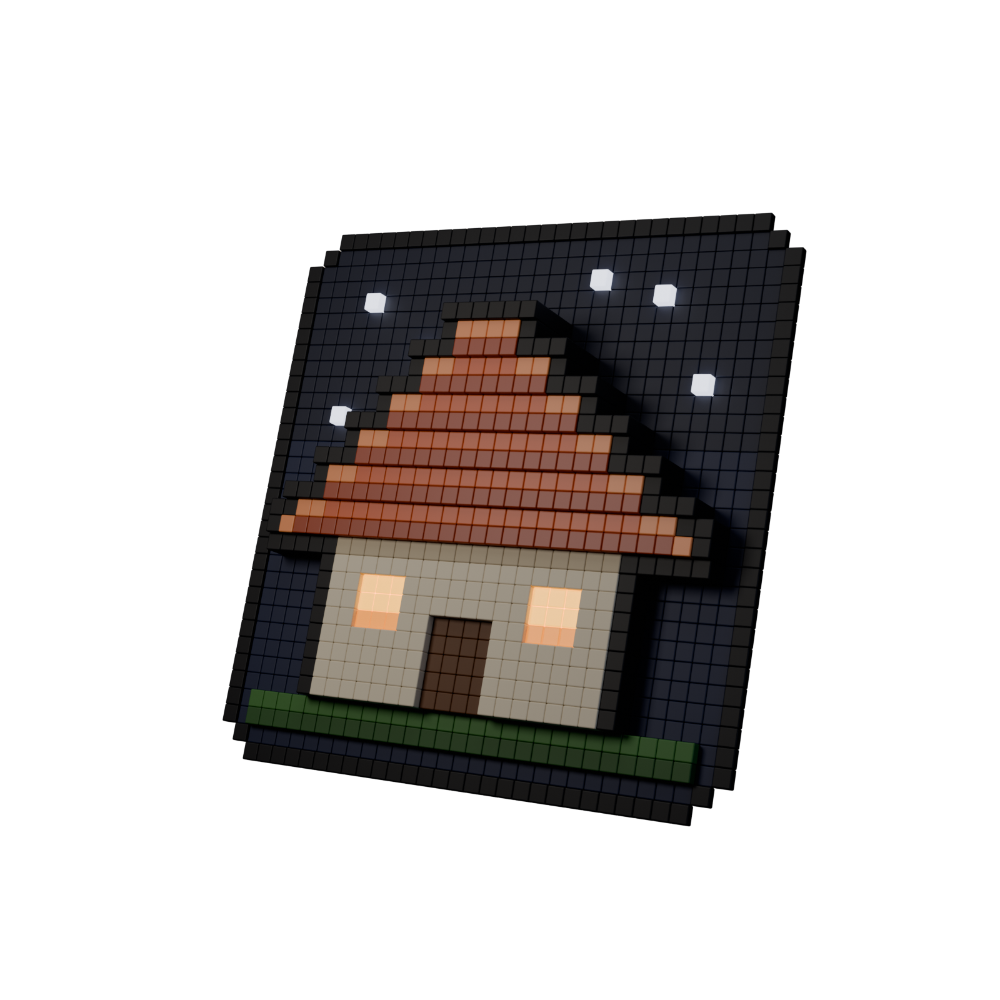
Whole roofs from the tops of your walls, in one click.
Right-click a wall top with the wand. Roofwright finds the building's outline, shows you a ghost of the roof, and builds it from stairs and slabs, hips and valleys included.
> /roof detect
Hip, 1:1, overhang 1 roof in spruce_stairs:
123 blocks over 79 columns.
Sneak + right-click with the wand or
/roof place to build.
> /roof place
Roof built: hip, 1:1, overhang 1 roof,
123 blocks. /roof undo takes it back.
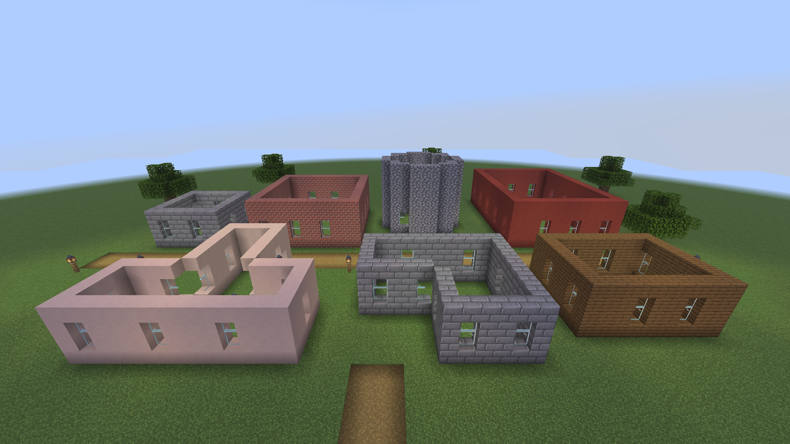
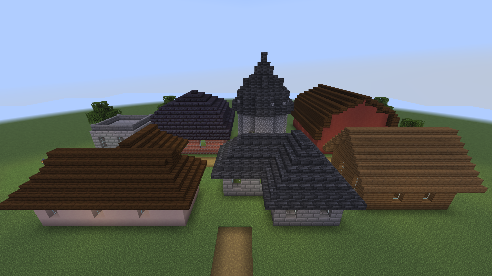
/roof place per house.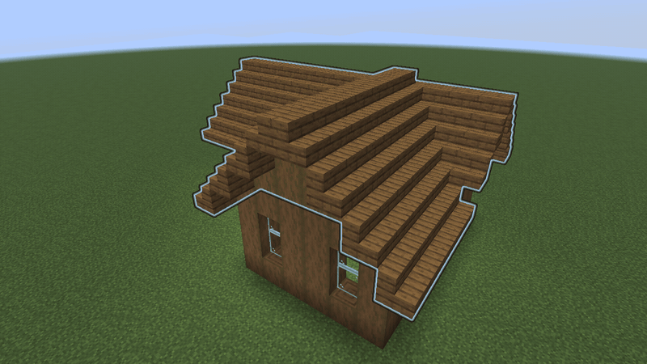
Gable, hip, dutch gable, gambrel, mansard, pyramid, shed, flat with a parapet, cone and dome. Pitch 1:2 (slabs), 1:1 (stairs) or 2:1 (steep), and an overhang of 0 to 3 blocks.
Install it on the server. Players join with an unmodified client; the wand is a vanilla stick and the ghost is made of vanilla display entities.
One click on a wall top: rectangles, L, T and U shapes and any other right-angled outline. No marking corners.
A glowing ghost only you can see, with blocks in the way in red. Undo and redo leave alone anything someone changed in the meantime.
Any member of a block family (oak, deepslate tiles, bricks, blackstone...), stair-like blocks from other mods such as Macaw's Roofs, or three blocks of your choice.
Seven houses with bare walls, each roofed with one detect and one place. Every shot on this page is a real capture from the game client, made by the project's capture test.
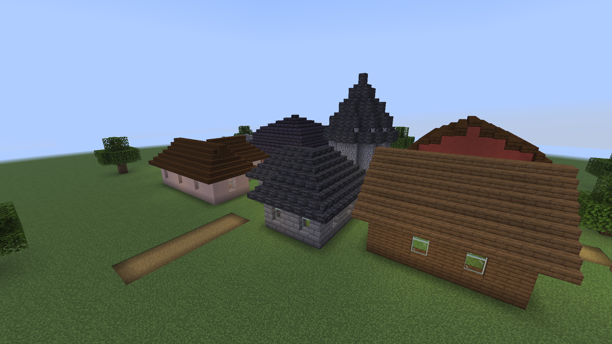
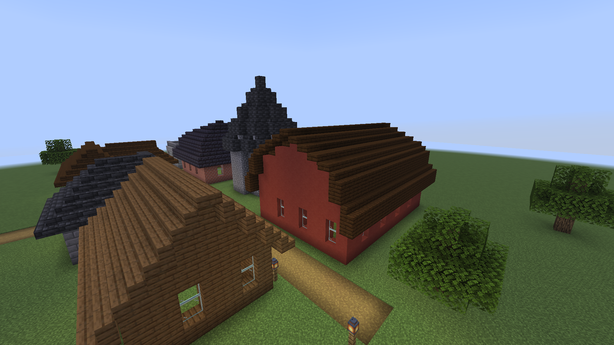
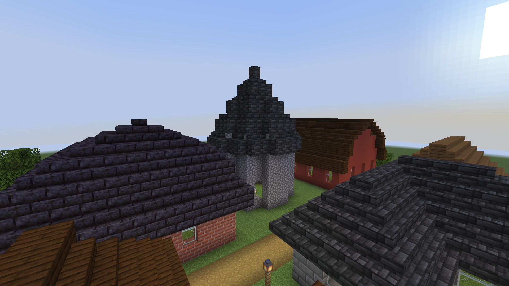
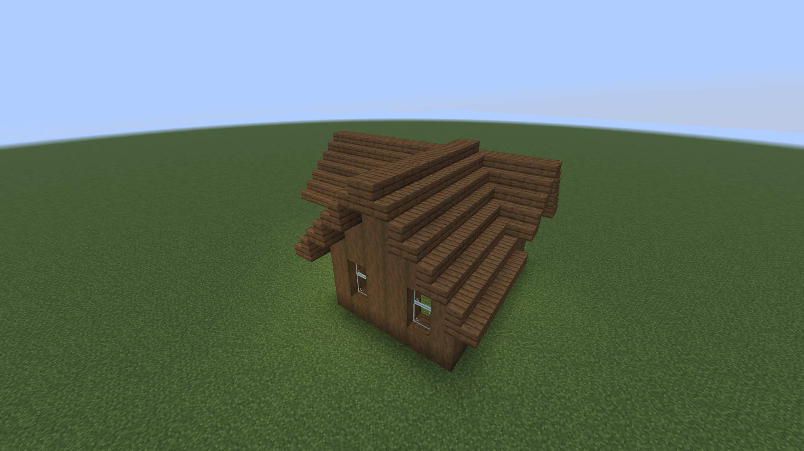
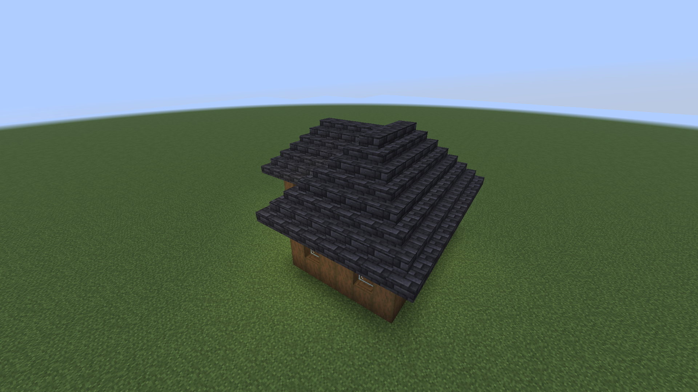
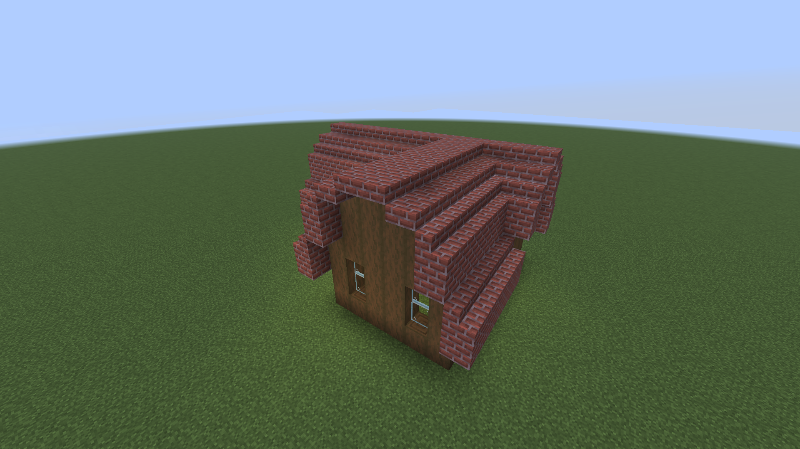
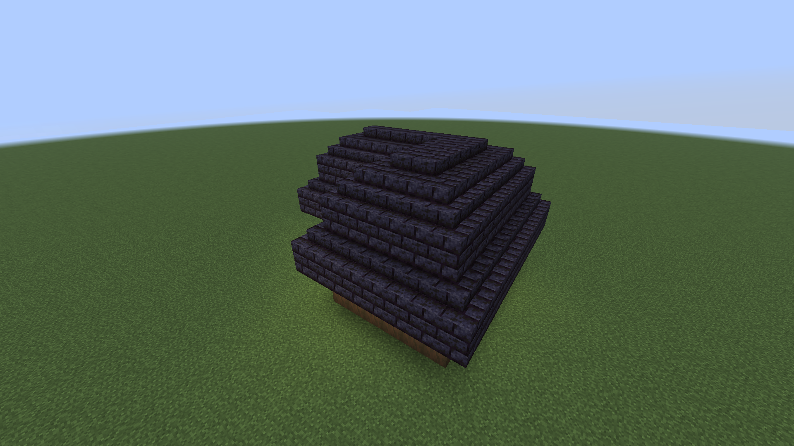
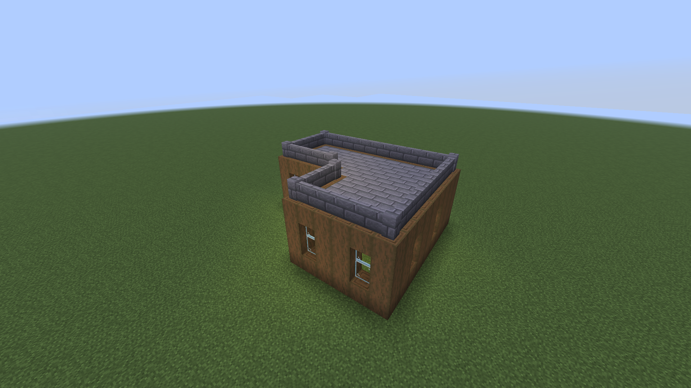
Every roof is a distance field over the outline, turned into heights in half blocks, then into stairs, slabs and full blocks.
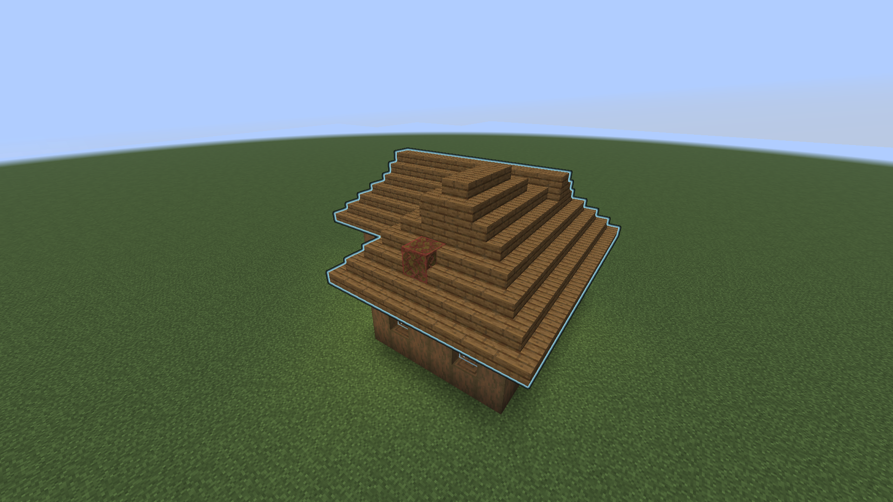
Every solid block in the wall-top layer that touches the clicked one, corners included, is wall. Everything inside that the outside cannot reach is the building. Gaps in the top layer are reported.
Hip roofs rise with the chessboard distance to the outside. On right-angled outlines that is the straight skeleton carpenters follow, so hips and valleys land on the diagonals.
Gable roofs split the outline into rectangles, largest first. Smaller wings get a ridge that runs into the main roof and ends at its ridge line, in a valley.
Each stair faces uphill and takes the corner shape the game's own rule gives it, so a neighbour update never reshapes the roof. The tests check every roof is watertight.
/roof and the alias /roofwright do the same thing. With the wand you rarely need them:
> /roof wand
> /roof style hip
> /roof material deepslate_tiles
> /roof detect
> /roof placeRight-click a wall top with the wand to preview, sneak + right-click to build, left-click for the next style.
| Command | What it does |
|---|---|
| Choose the building | |
wand | Gives you the wand. |
detect [pos] | Detects the building whose wall top you look at, or at pos, and previews its roof. |
select <from> <to> | Selects a rectangle by hand. select add adds another for L, T or U shapes. |
| Shape it | |
style <style> | gable, hip, dutch_gable, gambrel, mansard, pyramid, shed, flat, cone, dome. |
pitch low|normal|steep | 1:2 slabs, 1:1 stairs or 2:1 steep. |
overhang <0-3> | How far the roof reaches past the walls. |
material <block> | Stairs, slab and full block from any member of a family, or three blocks given explicitly. |
ridge, shed, ridgecap, gable | Ridge direction, shed side, slab or full ridge caps, gable wall block. |
| Build it | |
preview | Shows the ghost again. |
place [force] | Builds the roof. force also replaces plain blocks in the way. |
undo, redo | Takes your last roof back, or puts it back. |
cancel | Stops a roof still going up and clears the preview. |
info, help, reload | Your settings and history, the command list, re-read the config. |
With a permissions mod, these nodes decide. Without one, the default operator levels apply. Holding a wand grants nothing.
roofwright.useroofwright.forceroofwright.unlimitedroofwright.adminconfig/roofwright.json, applied with /roof reload.
{
"maxSpan": 96,
"maxBlocks": 30000,
"blocksPerTick": 2000,
"millisPerTick": 5,
"historySize": 10,
"previewLimit": 3000,
"previewSeconds": 300,
"wandCooldownTicks": 5,
"permissionLevels": {
"use": 2, "force": 2,
"unlimited": 3, "admin": 3
}
}3.60 ms
median worst tick while a 16,900-block hip roof goes up, default budget, measured with tools/benchmark.sh.
Air only unless you say force; never chests or bedrock. Claim mods using the Common Protection API are respected, even after you log off.
Needs Minecraft 26.3, Fabric Loader 0.19.5 or newer, Fabric API and Java 25.
mods/ folder..minecraft/mods/./roof wand.No. Roofwright runs on the server only. The wand is a vanilla stick with a name and a glint, and the ghost preview is made of display entities every vanilla 26.3 client renders.
No. It places blocks only into air; anything else in the way, even tall grass or water, is skipped and shows red in the preview. /roof place force replaces plain blocks, but never chests, signs or other block entities, nor bedrock.
The top layer of the walls must be closed (corners may touch diagonally). Doors and windows lower down do not matter. If there is a gap, Roofwright says so; fill it, or pick the outline by hand with /roof select and /roof select add.
Not in this version: it does not take blocks from your inventory, so by default only operators (permission level 2) can use it. Server owners can grant roofwright.use to builders.
Yes. Macaw's roof blocks behave like stairs, so /roof material mcwroofs:oak_roof works; the slab and full block are found by name. The tests run with Macaw's Roofs installed.
Planning a 256 by 256 hip roof takes about 18 ms. Placing is spread over ticks: at most blocksPerTick blocks and millisPerTick milliseconds per tick, shared by everyone's roofs. Server owners also cap roof size with maxBlocks and maxSpan.